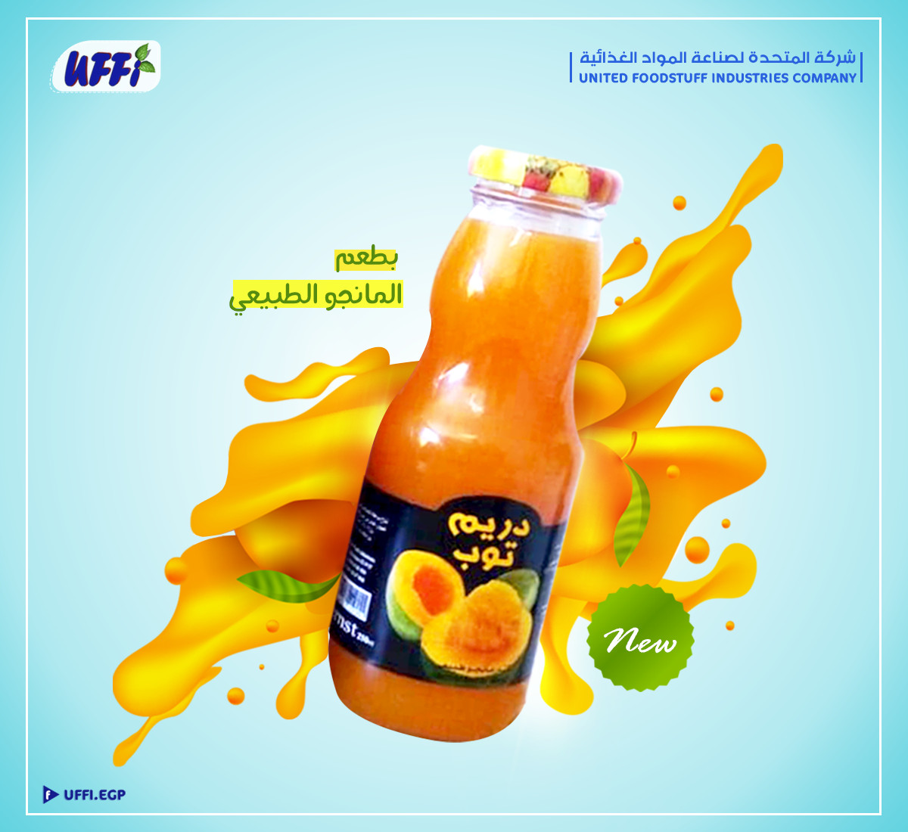
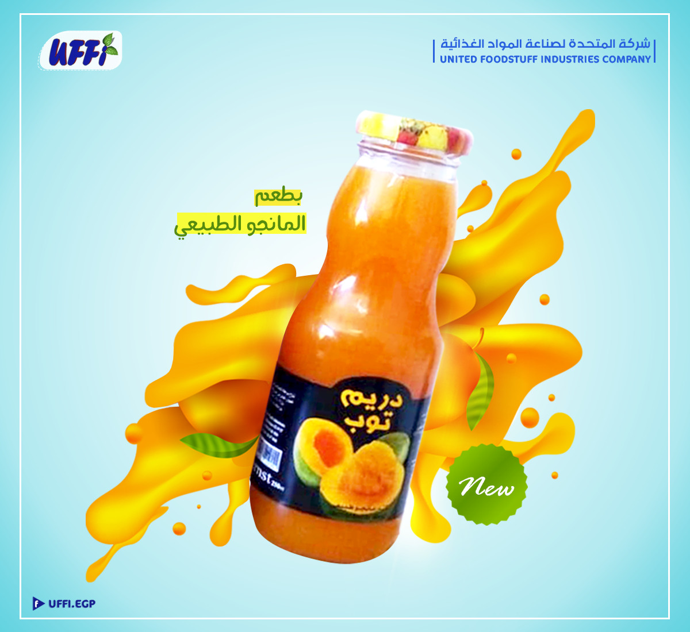

computers are used in many programs of daily life such as data processing and military purposes airports factories hospitals banks and so on the computers system has become an intermediary part of human life so we do not find a person without knowledge about the comuter regardless of age is the main goal in this use of accuracy and speed in storing data retrieval which improves the type of work that our project field is based on a system by computing a private quota center system where the system used in the center is transformed into a system manual to a computerized system that is more accurate and faster in work saving time effort security and the high speed to achieve this must be done in this project (hussa center private)
Thanks And Appreciation
first we remember god s grace upon us in completing this beautiful project to appreciate those who desereve it aooreciation whoever does not thank people does not thank god and the most deautiful thing is to find someone who points out your efforts it is a great gift and puts their continuous giving in appreciation and gratitude so we are congratulated by that educational and religious leaders who made every effort to develop work to overcome the difficulties thanks and appreciation should be givaen to everyone who has favored us and from my mother and father and my aunts and among the doctors who suppored me including dr nael elyan and dt ali muhmanna and others may allah reward you with alla the best

 
